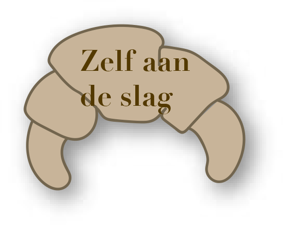
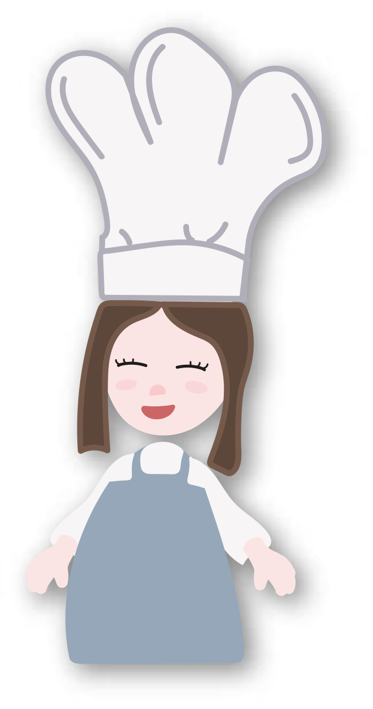
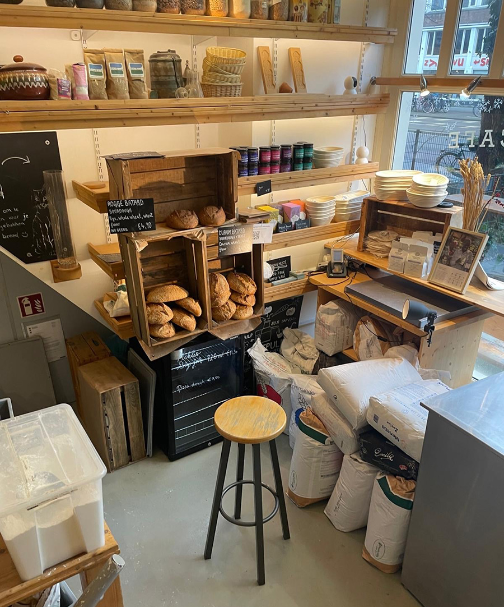
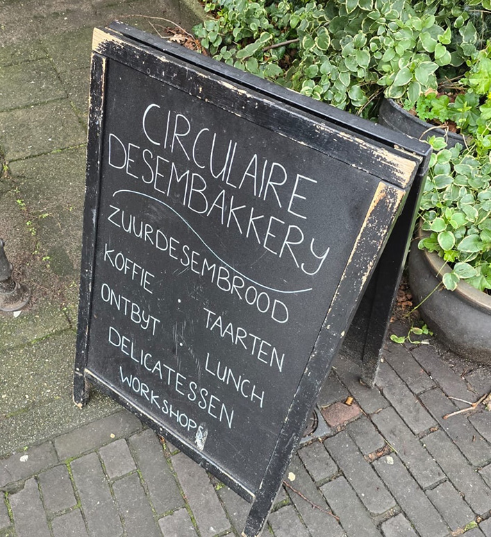

In de Baking Lab willen ze graag hun duurzame technieken leren aan een breder publiek, om zo meer mensen te informeren over hun duurzaam brood gebruik.
Ze bieden hiervoor daarom workshops aan. Door de hele week kan je verschillende dingen leren. Ze bieden niet alleen workshops aan voor beginners, maar ook voor wanneer je al wat meer ervaring hebt.
Het leuke is dat ze tijdens de workshop ook laten zien waarom iets gebeurt, zo word je helemaal terug genomen naar de ambacht van het brood bakken.
Heb jij nou interesse gekregen in Baking Lab, bekijk dan vooral even hun site en misschien zit jij binnenkort met je handen in het deeg in een van hun workshops!
Klik hier voor meer  